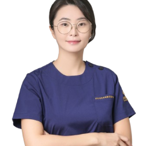
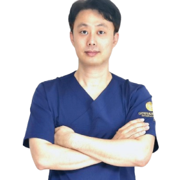

더건강연세재활운동센터가 쌓아온 길
-
01
누적 상담횟수
46,502건
-
02
누적 재활운동건수
21,304건
-
01
재활 전문가
135건
대한방문재활학회 설립
끊임없는 노력만이 국내 최고의 재활센터를 만듭니다.
-
신경계재활
뇌졸중, 파킨슨, 루게릭 등
-
수술 후 재활
무릎, 고관절, 인공관절 등
-
암 재활
수술 전, 수술 후, 항암, 자연치유 등
-
근골격계 재활
어깨, 목, 허리통증 등
서울, 경기, 충청, 대전, 호남, 경상, 강원, 부산, 제주 전국 어디든 갑니다.
더건강연세재활운동센터의 자랑, 최고의 재활 전문가들이 돕겠습니다.

- 모든 강사
물리치료, 작업치료 - 국가면허 보유
- 강사진
평균 임상경력 - 12.9년
- 대학병원, 재활병원 실장,
팀장 출신 - 최다 보유
더건강연세 System
체계적인 시스템과 지속적인 전문성 교육을 통해 최상의 서비스를 보장합니다.
-
박상호
임상 17년차
문제점에 대한 정확한 평가와 분석, 그리고 근거있는 재활을 하겠습니다.
-
이충섭
임상 14년차
바라는 목표가 이루어 질 수 있도록 열정과 최선을 다하겠습니다.
-
황순희
임상 17년차
차별화 된 치료와 확실한 결과로 보여드리겠습니다.
-

박수미
임상 20년차
전적으로 저를 믿고 재활을 받아 보셔야 합니다.
-
오영석
임상 13년차
당신이 활짝 웃는 그날까지!! 함께 하겠습니다.
-

최규식
임상 15년차
확실한 재활운동!! 더욱 건강한 모습!! 이루어 드리겠습니다.
-
조영도
임상 12년차
함께 바라보며 공감하고 알맞은 눈높이의 재활을 하겠습니다.
-
전문가소개 더보기

더건강연세 가정환경수정
재활 전문가 선생님들께서 ‘가정환경수정’까지 해드립니다.

저희는 재활 전문가 선생님들께서 ‘가정환경수정’까지 해드립니다.
-
가정환경 수정을 통해 낙상 위험률 감소
-
구조 변경, 보조기 등을 통한 일상생활동작 능력 향상
-
삶의 질 향상
믿을 수 있는 전문가들과 함께하세요.


고객 후기로 증명합니다.


최상의 치료와 재활 분야 혁신을 선도합니다.
최신 연구 결과와 전문적인 지식을 활용하여 환자에게 맞춤형 치료를 개발하고 제공함으로써
환자들의 건강과 웰빙을 최적화하는데 주력하고 있습니다.
우리의 목표는 환자분들이 빠르고 효과적으로 회복하고 일상생활로 복귀할 수 있도록 끊임없이 지원하는 것입니다.

장기연 교수님

공명자 교수님

김정헌 교수님

김재남 교수님

이주헌 교수님

장완호 교수님

하성규 교수님

허서윤 교수님
장기연 교수님
공명자 교수님
김정헌 교수님
김재남 교수님
이주헌 교수님
장완호 교수님
하성규 교수님
허서윤 교수님
장기연 교수님
공명자 교수님
김정헌 교수님
김재남 교수님
이주헌 교수님
장완호 교수님
하성규 교수님
허서윤 교수님
서울에서 제주까지 전국 17개 지점으로 전국 어디든 방문합니다.
숙련된 전문가가 가정으로 직접 찾아가, 방문재활운동을 도와드립니다.

이런 분들께 추천드립니다.
- 01 환자분께서 병원으로 오가는 것이 힘든 경우
- 02 장기간 이어진 입원 재활에 지친 경우
- 03 편안한 가정에서 재활운동을 받고 싶은 경우
- 04 VRE, CRE등의 항생제 내성균으로 재활을 받지 못하여 퇴원하게 되는 경우

어떻게 진행되나요?
- 01 대표원장님 1:1 상담 후 담당 선생님 매칭합니다.
- 02 첫 평가는 무료로 진행됩니다.
- 03 평가를 통한 문제점 파악, 앞으로 재활에 대해 논의하게 됩니다.
- 04 지속적인 피드백을 통해 재활운동을 관리해 드립니다.


재활프로그램 안내
-
뇌졸중

-
파킨슨

-
고관절 수술

-
인공관절

-
목,허리 디스크

-
수술 후 재활

-
노인근력약화

-
연하곤란

-
인지재활

-
암재활

-
소아재활

-
언어재활

수원광교에 위치한 재활센터에서도
편안하게 재활을 도와드립니다.
재활센터를 방문하시는 모든 분들께서
만족하실 수 있는 다양한 시설이 마련되어 있습니다.


시설안내
무료재활 시설 이용
재활이 끝난 후에도 무료로 운동 시설을 이용하실 수 있어 환자분들의 더 빠른 재활을 돕습니다.
-

더건강연세재활운동센터 시설
더건강연세재활운동센터의 다양하게 준비된 시설들은 환자분들이 최대한 재활에만 신경쓰실 수 있는 환경을 제공하기 위함입니다. 또, 대표원장을 비롯한 모든 전문가들이 직접 최선을 다해 재활운동을 진행합니다.
-

재활운동 시설 무료 이용
재활운동 프로그램이 끝난 후에도 환자분들이 추가적으로 운동을 진행할 수 있도록 런닝머신, 사이클 등의 재활운동 시설을 무료로 이용하실 수 있습니다.
-

무료주차 완비
방문부터 마음 편하게 시작해야 모든 운동을 효과적으로 진행하실 수 있습니다. 더건강연세재활운동센터는 2시간 무료 주차 시설이 완비되어 있어 언제든 편하게 방문이 가능합니다.
더건강연세재활운동센터
박병배 원장
더건강연세재활운동센터
김종성 원장
더건강연세의 전문적인 상담을 받아보세요.
기본적인 상담부터 정확한 진단까지
대표원장이 직접 진행합니다.
-
대표원장
1:1 상담 -
-
해당분야 담당
선생님 매칭 -
첫 무료평가
진행 -
문제점, 재활계획,
횟수 논의
-
-
지속적 피드백
관리